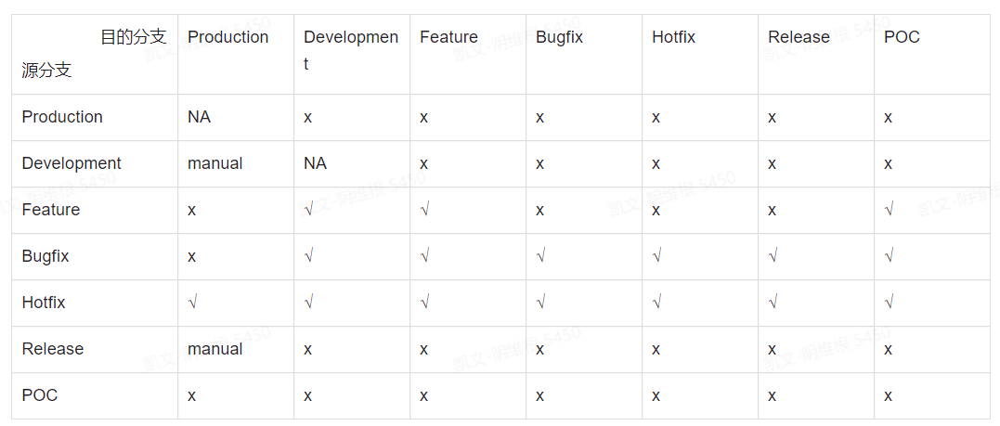

7.2.2. 分支/标签管理规范
7.2.2.1. 分支管理规范
7.2.2.1.1. 分支模型

Development分支
功能开发分支，此分支为代码最新的开发状态
分支约束条件：
只能通过代码合并请求(pull request)对分支状态进行修改
禁止修改代码提交历史
禁止删除
Production分支
产品分支，用于部署生产环境的分支。此分支为代码最新的稳定状态
分支约束条件：
禁止一切代码修改(只能通过管理员临时修改权限后进行修改)
禁止修改代码提交历史
禁止删除
Feature分支
开发新功能分支。Feature分支需要基于最新的Development分支创建，并且在新的特性开发完成后合入Development分支
分支约束条件：无
Bugfix分支
对Development分支或Release分支上存在的bug进行修复
分支约束条件：无
Hotfix分支
对Production分支或Release分支上存在的bug进行修复
分支约束条件：无
Release分支
对Development分支的功能达到计划预期后，可以创建发布分支。发布分支用于交付给测试团队进行测试使用。发布分支中只能进行bug修复，不能向发布分支中添加或修改功能。
分支约束条件
只能通过代码合并请求(pull request)对分支状态进行修改
禁止修改代码提交历史
禁止删除
POC分支
对于POC(概念验证)项目需要快速迭代更新一些新的功能代码，可以在develop/master分支基础上创建POC分支进行开发。POC分支中开发的代码可以降低代码质量和测试指标的要求，但是POC分支 禁止合入Development分支
约束条件：无
7.2.2.1.2. 分支命名规范
分支类型 |
分支名称 |
Development |
development |
Production |
master |
Feature |
feature/<user_name>/<feature_brief> |
Bugfix |
bugfix/<user_name>/<bug_brief> |
Hotfix |
hotfix/<user_name>/<bug_brief> |
Release |
release/v<Major>.<Minor>-[postfix] release/<PROJECT_CODE>/R<release-number>[-postfix] |
POC |
poc/<PROJECT_CODE> |
分支合并规则矩阵

7.2.2.2. 标签管理规范
标签用于标记一个工程的代码状态
可以对Development/Release分支中的代码状态进行打标签操作
一般只需要在代码状态正式交付时打标签
标签命名规范
v<Major>.<Minor>.<Patch>
7.2.2.3. 提交管理规范
为了方便使用，我们避免了过于复杂的规定，格式较为简单且不限制中英文：
<type>(<scope>): <subject>
// 注意冒号 : 后有空格
// 如 feat(miniprogram): 增加了小程序模板消息相关功能
备注
type必填表示提交类型
scope选填表示commit的作用范围，如数据层、视图层，也可以是目录名称
subject必填用于对commit进行简短的描述
type必填表示提交类型，值有以下几种：
feat - 新功能 feature
fix - 修复 bug
docs - 文档注释
style - 代码格式(不影响代码运行的变动)
refactor - 重构、优化(既不增加新功能，也不是修复bug)
perf - 性能优化
test - 增加测试
chore - 构建过程或辅助工具的变动
revert - 回退
build - 打包